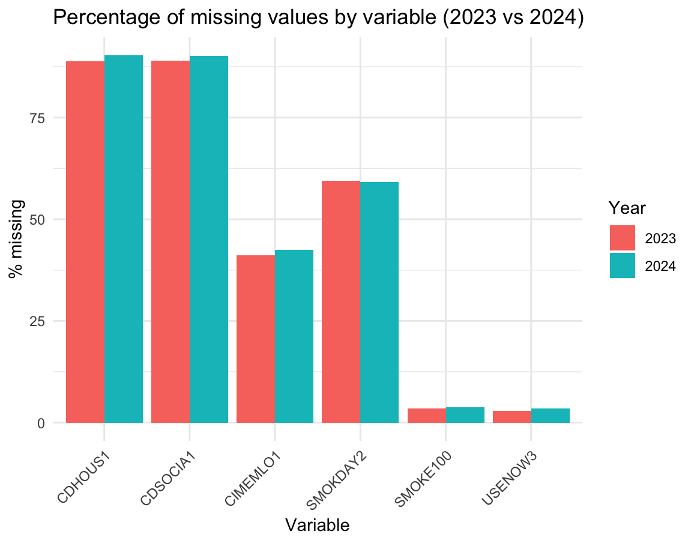
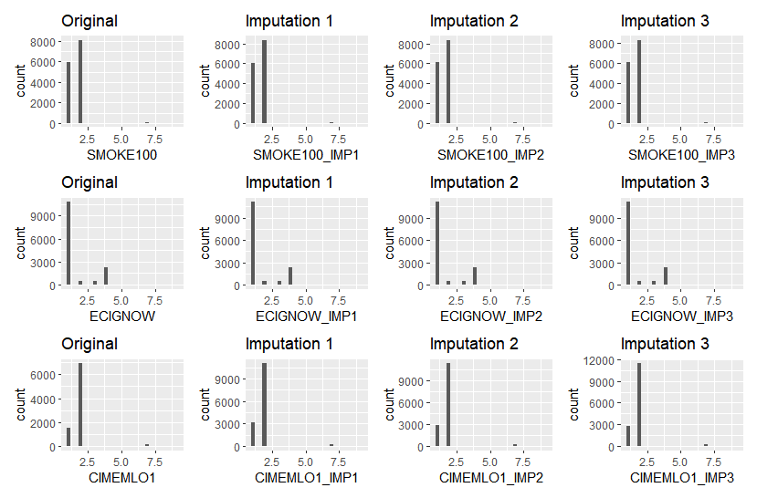

library(haven)
brfss_2024 <- read_xpt(unz("data/LLCP2024XPT.zip", "LLCP2024.XPT ")) # 457,670 records
brfss_2023 <- read_xpt(unz("data/LLCP2023XPT.zip", "LLCP2023.XPT ")) # 433,323 recordsInitial Draft
Cleaning and Packaging the Missouri BRFSS Data
Introduction
We developed an R package that includes cleaned 2023 and 2024 BRFSS datasets for the state of Missouri, focusing specifically on the Cognitive Decline and Tobacco Use modules. We chose this project because accessing BRFSS data currently requires downloading and manually extracting large ZIP files from the official website, which is time-consuming and inconvenient. Our package is designed to make these data easily accessible and ready to use directly within RStudio. Our goal is to simplify the workflow for other users and help BRFSS become a well-known, user-friendly resource that can be loaded as easily as built-in datasets like iris. In this project, we will identify missing values in the Cognitive Decline and Tobacco Use modules, characterize the types of missingness, and impute those missing values. Finally, we will transform and tidy the data so that it is well structured and easy to use in a public R package.
Dataset
The BRFSS data for our project is found at this link. The CDC along with state health departments regularly conduct telephone surveys to collect this health-related data about U.S. residents. We downloaded the 2023 and 2024 data (most recent releases) in the SAS Transport Format, both provided in separate .zip files. Reading in these files can be easily accomplished with the help of the haven R package.
To load the data:
We filtered the dataset to only use records from the state of Missouri. Our original idea was to use Nebraska’s data, but since it has limited topics, we chose our southeastern neighbors. The Missouri data included information on a wide range of topics, but we chose to focus on the Cognitive Decline and Tobacco Use modules. We got rid of the rest of the columns (that weren’t used in the missing value imputation either), and analyzed/cleaned those two.
Cleaning the Data
The main effort of our project went into cleaning the dataset, which grew to be quite the task. For starters, the dataset is huge, which is quite overwhelming to someone unfamiliar with the data. There is documentation in place, but it only makes analysis slightly easier. Combining two years’ worth of data just makes the problem worse, as some of the column names didn’t match up.
The BRFSS data also naturally has lots of missing data. This is because, in each state, surveyors pick and choose only a handful of modules out of the wide variety of topics. This means that a state has missing values in the columns relating to all the other modules. Additionally, there are frequent missing values even in the columns relating to modules that a state was questioned on.
These factors combined made cleaning the dataset a tough task but, more importantly, a necessary one. This turned into a 3-step process: investigating the missing values, imputing the missing values, and tidying the dataset.
Investigating Missing Values
Before deciding how to handle missing data, we examined how often values were missing and what type of missingness might be present (MCAR, MAR, or MNAR).
First, we summarized the extent of missing data for the tobacco and cognitive variables in the 2023 and 2024 Missouri samples. We found that several items had a large amount of missingness, especially in the cognitive module (CDHOUS1, CDSOCIA1), where more than 40–90% of responses were missing or not applicable.
We then formally tested whether the missing data could be considered Missing Completely At Random (MCAR) using Little’s MCAR test (naniar::mcar_test). We applied this test separately to the tobacco variables and the cognitive variables for both years. In all cases, the MCAR test was highly significant (p < 0.001), indicating strong evidence against MCAR. This suggests that missingness is related to observed or unobserved characteristics, and it supports the use of multiple imputations
Imputing Missing Values
After analyzing the missing values, we imputed three fields from our chosen modules:
SMOKE100: Have you smoked at Least 100 Cigarettes- 1 - Yes; 2 - No; 7 - Don’t Know; 9 - Refused
ECIGNOW: Do you now use e-cigarettes, or vaping products?- 1 - Never; 2 - Every day; 3 - Some days; 4 - Not right now; 7 - Don’t know; 9 - Refused
CIMEMLO1: Have you experienced difficulties with thinking or memory that is happening more often or is getting worse?- 1 - Yes; 2 - No; 7 - Don’t know; 9 - Refused
The imputation method that we chose to use was Predicted Mean Matching (PMM). This is a reliable prediction strategy that keeps the data realistic by maintaining the original shape and spread of the data. The algorithm works by finding a small group of instances (the default is 5 which was used) that are very similar to the instance that you are imputing. This similarity is based on specified fields. Once those are identified, a random complete instance (has an observed value in the field that is being imputed) is selected. This ensures that the imputed value is an actual value, not just a generated average. In the case of this dataset where the values are specific integers, this detail is even more crucial.
The predictor fields that we used to impute these values were selected based on prior knowledge and our own hypotheses. These included a wide range of demographic, health, and miscellaneous info.
Predictors:
MARITAL: Marital StatusEDUCA: Education LevelVETERAN3: Veteran StatusEMPLOY1: Employment StatusCHILDREN: Number of Children in HouseholdINCOME3: Income LevelPREGNANT: Pregnancy StatusWEIGHT2: Reported Weight in PoundsCRACE1: Child Non-Hispanic Race including MultiracialASTHMS1: Asthma StatusCAGEG: Child ageAGE80: Age value (collapsed above 80)CHCOCNC1: Ever told you had melanoma or any other types of cancerALCDAY4: Days in past 30 had alcoholic beverageMARJSMOK: Did you smoke marijuana or cannabisGENHLTH: General HealthMENTHLTH: Number of Days Mental Health Not Good (out of the past month)
We kept 3 imputed versions of each column, along with the original column, in the resulting dataset after imputation.
To ensure that the imputation worked properly and didn’t skew the results, we then analyzed the distributions of the original columns compared to their imputed versions. A summary of these distributions is shown in the figure below:

The distributions of all the imputed columns look extremely similar to their corresponding original distribution, convincing us that the PMM imputation worked very well. However, this dataset still isn’t ready for use, as it needs to be turned into a tidy format.
Tidying the Dataset
We first split up the new and complete BRFSS dataset into 3 applicable datasets named Demographics, CognitiveDecline, and TobaccoUse.
The Demographics dataset included columns: SEQNO, AGE80, CAGEG, CRACE1, MARITAL, EDUCA, INCOME3, EMPLOY1, CHILDREN, VETERAN3, PREGNANT, WEIGHT2, GENHLTH, MENTHLTH).
CognitiveDecline included columns: (SEQNO, CIMEMLO1, CIMEMLO1_IMP1,CIMEMLO1_IMP2,CIMEMLO1_IMP3).
TobaccoUse included columns: (SEQNO, SMOKE100, SMOKE100_IMP1, SMOKE100_IMP2, SMOKE100_IMP3, ECIGNOW, ECIGNOW_IMP1, ECIGNOW_IMP2, ECIGNOW_IMP3, SMOKER3)
After splitting up the dataset, we verified that SEQNO is unique with in each year’s BRFSS Missouri subset and can use it as the primary key when splitting into multiple related tables. This was confirmed when the output revealed no duplicate SEQNO ID/numbers, which documents it as a single column key and normal form. ### R Package
Mitch
Conclusion
In this project, we transformed raw BRFSS Missouri data into a clean, well-structured, and user-friendly R package that makes access easier to two important public health modules: Cognitive Decline and Tobacco Use. By downloading and cleaning the 2023 and 2024 datasets, we created a reproducible workflow that makes these large and complex data files available with a single function call. Our work addressed challenges such as inconsistent variable naming across years, missing values, and imputating missing values, while still allowing the usability of the original survey responses.
Through MCAR testing, we confirmed that missingness patterns were not completely at random, and we used Predictive Mean Matching (PMM) to impute three fields. Plots showed that the PMM imputations closely reflected the original data distributions, showing that PMM worked well. After imputation, we reorganized the cleaned data into tidy seperate datasets (Demographics, CognitiveDecline, and TobaccoUse) built using SEQNO as a key. This structure makes the dataset easier to explore and analyze in future projects.